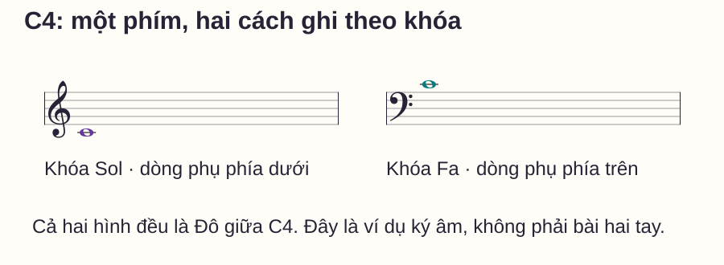
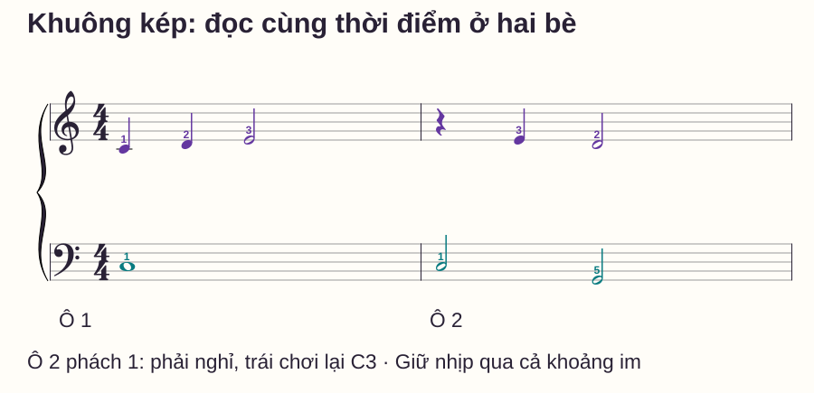
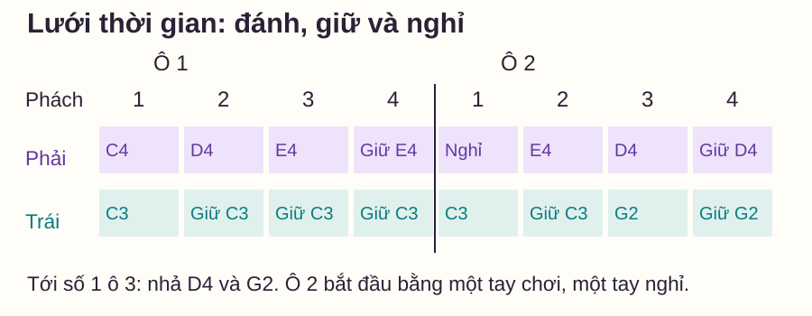

Đọc nhạc
Khuông nhạc kép piano: nhìn hai khuông theo thời gian
# Khuông nhạc kép piano: nhìn hai khuông theo thời gian
Bạn đọc xong dòng trên rồi mới nhìn xuống dòng dưới, nhưng khi ghép thì không biết nốt trái gặp nốt phải nào. Hai khuông của piano không phải hai câu cần chơi lần lượt. Chúng thể hiện những phần âm nhạc diễn ra trên cùng một dòng thời gian.
Bài này dùng một ví dụ hai ô nhịp để bạn nhìn rõ các thời điểm chơi, giữ, nghỉ và nhả. Có sheet hai bè, lưới phách và cách bắt đầu một đoạn ở giữa nốt đang giữ. Bạn có thể gõ hoặc chơi trực tiếp trên đàn, chưa cần đọc nhanh hai khuông.
Trả lời nhanh
Đọc khuông nhạc kép piano bằng hai hướng: lên xuống để xác định cao độ theo khóa, từ trái sang phải để theo thời gian. Hai nốt ở cùng thời điểm cần được phối hợp, nhưng không phải phách nào cả hai tay cũng đánh nốt mới. Hãy xem trường độ để biết tay nào tiếp tục giữ hoặc đang nghỉ. Chia mẫu thành từng phách, ghi rõ bốn trạng thái chơi, giữ, nghỉ và nhả rồi gõ trước khi đàn. Khi tập từ giữa đoạn, chuẩn bị các nốt đã bắt đầu trước đó nhưng vẫn còn được giữ. Cuối cùng đọc lại từ đầu ô để kiểm rằng cách tập đoạn giữa không làm thay đổi bản nhạc.
Khuông kép gồm những gì?
Một khuông có năm dòng; piano thường dùng hai khuông nối bằng dấu ngoặc nhọn bên trái: khóa Sol ở trên và khóa Fa ở dưới. Đó là cách ghi một vùng cao độ rộng cho cùng nhạc cụ. The Open University — The great staff giải thích quan hệ giữa hai khuông và vị trí Đô giữa.
Trong nhiều ví dụ nhập môn, tay phải chơi khuông trên, tay trái chơi khuông dưới. Đây là cách phân công trong mẫu cụ thể, không phải định nghĩa bất biến của hai khóa. Một bản nhạc khác có thể đổi khóa hoặc chia tay khác.
Khoảng cách trống giữa hai khuông có thể thay đổi theo bố cục trang. Đừng đo bằng mắt xem một nốt “ở đúng giữa hai khuông” rồi đoán đó là C4. Hãy đọc dòng kẻ phụ và xem nốt thuộc khuông nào.
Cùng Đô giữa, hai chỗ ghi
C = Đô, D = Rê, E = Mi, F = Fa, G = Sol, A = La, B = Si. C4 là Đô giữa. Trên khóa Sol, nó nằm ở dòng phụ đầu tiên bên dưới; trên khóa Fa, nó nằm ở dòng phụ đầu tiên phía trên.

Với mẫu dưới đây, bạn chỉ cần biết C4–D4–E4 ở tay phải và C3–G2 ở tay trái. C3 là Đô thấp hơn C4 một quãng tám; G2 là Sol thấp hơn C3. Nếu chưa đọc ký hiệu thuần thục, bảng chữ của bài vẫn cung cấp đủ cao độ, ngón và thời gian để thử.
Đọc dọc theo thời điểm, đọc ngang theo trường độ
Một nốt có hai thông tin khác nhau: cao độ nằm ở vị trí đầu nốt; độ dài được ghi bằng hình nốt và các ký hiệu liên quan. Trong mẫu 4/4 này, nốt đen dài một phách, nốt trắng hai phách, nốt tròn bốn phách; dấu nghỉ đen yêu cầu im một phách ở bè đó.
Vì vậy, hai bè có thể dùng số lượng ký hiệu khác nhau trong cùng một ô. Bốn phách của một nốt tròn có thể diễn ra cùng lúc với nhiều nốt ngắn ở bè kia. Không ghép “nốt thứ hai ở trên” với “nốt thứ hai ở dưới” nếu thời điểm của chúng không trùng.
Khoảng cách in giữa các nốt cũng không phải thước đo thời gian tuyệt đối. Hãy cộng trường độ từ đầu ô; căn chỉnh dọc của bản nhạc hỗ trợ bạn nhìn các điểm cùng lúc. Khi một nốt được kéo dài, khoảng chưa có đầu nốt mới không đồng nghĩa với dấu nghỉ.
Bài tập: hai ô nhịp và bốn trạng thái

Đặt phải trong vùng C4–E4: ngón cái 1 ở C4, trỏ 2 ở D4, giữa 3 ở E4. Đặt trái trong vùng G2–C3: ngón út 5 ở G2, ngón cái 1 ở C3. Số ngón chỉ dành cho mẫu này; đừng áp cách đặt C3 bằng ngón út của một bài khác vào đây.
Chưa dùng pedal. Đếm 1–2–3–4 cho mỗi ô. Ở cuối hai ô, đếm số 1 của ô 3 rồi nhả cả hai nốt còn giữ.
Ô 1: một bè đi, một bè giữ
| Phách | Tay phải | Tay trái |
|---|---|---|
| 1 | Chơi C4 · ngón 1 | Chơi C3 · ngón 1 |
| 2 | Nhả C4, chơi D4 · ngón 2 | Giữ C3 |
| 3 | Nhả D4, chơi E4 · ngón 3 | Giữ C3 |
| 4 | Giữ E4 | Giữ C3 |
Tổng phải là 1 + 1 + 2 = 4 phách; trái là 4 phách. Phách 4 không có lần đánh mới ở tay nào, nhưng cả hai bè vẫn có âm cần giữ. Đếm “4” vẫn diễn ra trong thời gian của nốt, không phải sau khi đã nhả.
Ô 2: một tay nghỉ không làm tay kia nghỉ theo
| Phách | Tay phải | Tay trái |
|---|---|---|
| 1 | Nhả E4 cũ, nghỉ một phách | Nhả rồi chơi lại C3 · ngón 1 |
| 2 | Chơi E4 · ngón 3 | Giữ C3 |
| 3 | Nhả E4, chơi D4 · ngón 2 | Nhả C3, chơi G2 · ngón 5 |
| 4 | Giữ D4 | Giữ G2 |
| Số 1 ô 3 | Nhả D4 | Nhả G2 |
Tổng phải là 1 phách nghỉ + 1 + 2 = 4; trái là 2 + 2 = 4. Nốt C3 không được đánh lại ở phách 2 vì vẫn đang trong trường độ hai phách của nó.

Phương pháp đọc và ghép từng bước
Bước 1 — Quét dấu khóa, nhịp và điểm kết
Chỉ hai khóa rồi xác định 4/4. Khoanh điểm cần dừng: đầu ô 3. Trước khi chơi, nói được một khác biệt giữa hai ô, chẳng hạn “phải nghỉ ở đầu ô 2”.
Bước 2 — Gọi hành động mà chưa đàn
Dùng bảng để nói từng phách: “hai tay chơi”, “phải đổi, trái giữ”, “phải đổi, trái giữ”, “cả hai giữ”. Sang ô 2 phải đổi lời gọi: “phải nghỉ, trái chơi”, “phải chơi, trái giữ”, “hai tay đổi”, “cả hai giữ”.
Không dùng một khẩu lệnh cho toàn bài nếu nhiệm vụ đã thay đổi. “Cả hai giữ” khác “cả hai nghỉ”: ở trạng thái nghỉ, bè không tiếp tục một nốt cũ trong mẫu này.
Bước 3 — Gõ điểm vào, rồi kiểm phần giữ trên đàn
Gõ nhẹ trên hai đùi: tay trái gõ ở ô 1 phách 1, ô 2 phách 1 và 3; tay phải gõ ở ô 1 phách 1, 2, 3 và ô 2 phách 2, 3. Làm hai lượt, đếm thành tiếng qua cả phách không gõ.
Gõ giúp kiểm điểm phát âm mới, nhưng không tự kiểm được giữ đủ phím. Khi sang đàn, đọc thêm các ô “giữ” và “nhả” trong bảng; đừng chỉ mô phỏng các cú gõ rồi nhấc tay ngay.
Bước 4 — Thử riêng ô 2, sau đó nối từ ô 1
Chuẩn bị đúng vị trí hai tay, đếm một ô rồi bắt đầu ô 2: trái chơi C3 ở số 1, phải chưa đánh. Phải vào E4 ở số 2, rồi hai tay cùng đổi ở số 3.
Thử hai lượt ô 2. Có thể bắt đầu khoảng 50 phách/phút, một click ứng với một phách. Nếu chưa biết hành động kế trước khi click đến, giảm đoạn còn hai phách hoặc làm rõ nốt riêng trước. Sau khi rõ, chơi đủ hai ô một lượt để kiểm lần chuyển qua vạch nhịp.
Bắt đầu ở giữa đoạn khi một nốt đã được giữ
Giả sử bạn chỉ muốn sửa phách 2–3 của ô 2. Khi phách 2 bắt đầu, C3 đã được chơi từ phách 1 và phải còn xuống. Nếu bỏ trạng thái này, bài cắt không còn đúng nhiệm vụ của bản đầy đủ.
Để tập đoạn cắt, đặt C3 xuống trước ở giai đoạn chuẩn bị. Bắt đầu đếm “2” cùng E4 phải trong khi trái tiếp tục giữ C3, rồi tới “3” cùng đổi phải sang D4 và trái sang G2. Trong lúc chuẩn bị đoạn cắt, bạn đã chủ động tái tạo nốt đang giữ; không có nghĩa phải đánh lại C3 ở phách 2 khi chơi nguyên bài.
Sau hai lượt cắt, trở lại đầu ô 2 để kiểm. Đây là phép thử trạng thái: bạn đang tập đúng lần chuyển có nốt giữ hay vô tình tập một cặp nốt mới khác với sheet?
Lịch thực hành mười phút
- Phút 0–2: quét ký hiệu, tìm phím và nói khác biệt hai ô.
- Phút 2–4: gọi hành động và gõ hai lượt, không bỏ phách im.
- Phút 4–6: thử ô 2 hai lần, sửa đúng điểm phải vào muộn hơn trái.
- Phút 6–8: tập đoạn cắt 2–3 nếu cần; nếu không, kiểm nốt giữ ở phách 4.
- Phút 8–10: nối đủ hai ô một lượt và viết một lỗi, một phép thử cho buổi sau.
Lỗi thường gặp
| Nhầm lẫn | Dấu hiệu | Cách sửa |
|---|---|---|
| Ghép theo thứ tự ký hiệu | Nốt thứ hai trái bị kéo tới nốt thứ hai phải dù lệch thời gian | Cộng trường độ của từng bè từ đầu ô, dóng lại theo phách |
| Thấy khoảng trống là nhả | Nốt tròn C3 bị cắt khi phải đổi | Kiểm nốt đang còn bao nhiêu phách; chỉ nhả theo thời điểm đã ghi |
| Dấu nghỉ ở trên kéo cả hai tay nghỉ | C3 đầu ô 2 bị bỏ | Gọi riêng hai nhiệm vụ ở phách 1 ô 2 rồi gõ thử |
| Giữ C3 xuyên vạch vì cùng tên | Ô 2 không có lần C3 mới | Xem có dấu nối hay không; mẫu này không có, cần đánh lại |
| Cắt đoạn nhưng quên nốt cũ | Phách 2–3 dễ riêng, ghép nguyên ô lại hỏng | Chuẩn bị C3 đang giữ trước lượt cắt, rồi kiểm từ đầu ô |
Nếu căng tay hoặc phải nín thở để giữ nốt, nhả và nghỉ ngắn, sau đó giảm mẫu. Bài đang kiểm khả năng đọc trạng thái, không phải sức chịu đựng khi giữ tư thế.
Khi nào học tiếp?
Trước hết, nhìn sheet và nói đúng hai khác biệt: ở đầu ô 2 phải nghỉ nhưng trái đánh lại; ở phách 4 cả hai ô đều còn nốt giữ dù không có lần đánh mới. Sau đó thử hai ô hai lượt ở cùng tốc độ, đúng điểm vào và nhả, có thời gian đặt lại giữa lượt.
Một phép chuyển giao không cần thêm nốt: che lưới chữ và chỉ dùng sheet để giải thích hành động tại ô 2 phách 2 và 3. Nếu vẫn cần lưới, quay lại đối chiếu từng nốt với độ dài của nó; chưa cần tăng số ô.
Bạn có thể ôn khóa Sol hoặc khóa Fa nếu phần khó là cao độ. Khi hiểu thời điểm nhưng tay chưa theo kịp, bài ghép hai tay giúp thu nhỏ nhiệm vụ; phách và tiết tấu dành cho phần giữ nhịp đếm.
Câu hỏi thường gặp
Có phải đọc xong khuông trên rồi mới đọc khuông dưới không?
Bạn có thể nghiên cứu riêng từng phần để hiểu nốt. Khi xác định cách chơi chung, phải đưa chúng về cùng dòng thời gian thay vì nối hai phần thành hai câu lần lượt.
Hai nốt thẳng cột có luôn cùng lúc không?
Trong bản khắc nhạc chuẩn, căn chỉnh dọc giúp nhận các thời điểm cùng vào. Vẫn cần đọc trường độ từ đầu ô, nhất là bản chụp méo hoặc nhiều bè; không đo số milimét giữa hai đầu nốt để tính phách.
Khuông dưới không có đầu nốt mới thì tay trái làm gì?
Xem trường độ của nốt trước và dấu nghỉ nếu có. Trong ô 1 của mẫu, C3 vẫn giữ bốn phách; nó không nghỉ mỗi khi tay phải đổi nốt.
Hai nốt cùng tên qua vạch nhịp có đánh lại không?
Phải đọc dấu nối và chỉ dẫn cụ thể. Trong ví dụ này không có dấu nối, nên C3 ở đầu ô 2 được đánh lại dù tên giống nốt ô 1.
Có cần ghép ngay khi mới hiểu khuông kép không?
Không. Bạn có thể gọi hành động hoặc gõ trước để kiểm thời điểm. Đặt phím và ngón rõ rồi mới chơi một đoạn nhỏ.
Có phải mọi bản piano đều chỉ có hai khuông không?
Không. Hai khuông là cách trình bày rất phổ biến, nhưng tác phẩm có thể đổi khóa hoặc dùng thêm khuông. Hãy áp dụng nguyên tắc đọc cao độ và thời gian cho ký âm thực tế.
Nguồn và ghi chú biên soạn
Tham khảo The Open University — The great staff về quan hệ hai khuông, musictheory.net — Staff, Clefs and Ledger Lines về khóa và dòng phụ. Quy trình cắt đoạn có trạng thái nốt giữ, hai ô nhạc, lưới hành động và hình được biên soạn riêng cho bài, không lấy lại bài tập nguồn. Các tiêu chí tự kiểm là gợi ý sư phạm nội bộ, chưa có thử nghiệm học viên độc lập.